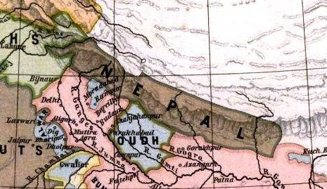

History of Nepal
In 1923, Britain recognized the absolute independence of Nepal. Between 1846 and 1951, the country was ruled by the Rana family, which always held the office of prime minister. In 1951, however, the king took over all power and proclaimed a constitutional monarchy. Mahendra Bir Bikram Shah became king in 1955. After Mahendra died of a heart attack in 1972, Prince Birendra, at 26, succeeded to the throne. In 1990, a pro-democracy movement forced King Birendra to lift the ban on political parties. The first free election in three decades provided a victory for the liberal Nepali Congress Party in 1991, although the Communists made a strong showing. A small but growing Maoist guerrilla movement, seeking to overthrow the constitutional monarchy and install a Communist government, began operating in the countryside in 1996. On June 1, 2001, King Birendra was shot and killed by his son, Crown Prince Dipendra. Angered by his family's disapproval of his choice of a bride, the crown prince also killed his mother and several other members of the royal family before shooting himself. Prince Gyanendra, the younger brother of King Birendra, was then crowned king.